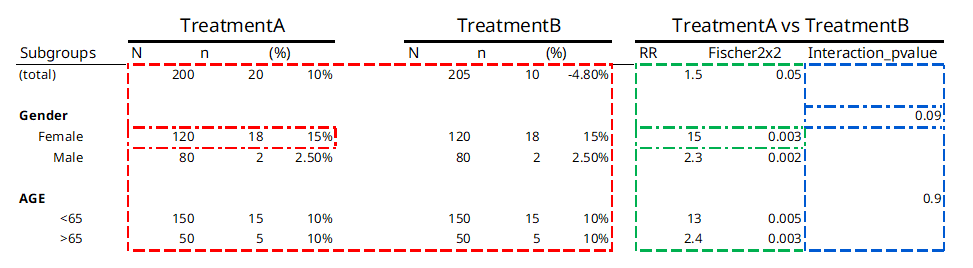

Statistical method types
The {chef} framework categorizes statistical functions into three main categories depending on how they operate over stratification levels and treatment levels. Operations can either be done once per stratification level or treatment level, or they can operate across levels.
Figure 1 below shows a typical table from a safety analysis and color codes each result based on the function type that creates it:

Figure 1
Table 1 below provides a description of each of the three
function types, color coded to the outputs they produce in table 1
above:
| Name | Description | Example function | Example application |
|---|---|---|---|
| stat_by_strata_and_trt | One output per combination of strata level and treatment level for each strata type (e.g. SEX, AGEGR, etc): |
n_subj() - Counts number of subjects in each stratification
level and treatment level
|
How many female subjects are in TreatmentA (answer = 120) |
| stat_by_strata_across_trt | One output per strata level, across treatment levels for each strata type (e.g. SEX, AGEGR, etc): |
RR() - Calculates the relative risk for the outcome/event
within a stratification level
|
What is the RR of having the outcome for females in Treatment A as compared to females in Treatment B (answer = 15) |
| stat_across_strata_across_trt | One output per strata type (e.g. SEX, AGEGR, etc), across treatment levels |
p_val_interaction() - Test of interaction effect for
stratification level
|
Is the risk of having the outcome different across the strata of SEX |
The function type also determines when the function is applied. In
our example from figure 1, a
stat_by_strata_by_trt function will be
called once for each combination of stratification level and treatment
level, as well as once for TOTALS for each treatment level:
- SEX == “MALE” & TRT == “TreatmentA”
- SEX == “FEMALE” & TRT == “TreatmentA”
- SEX == “MALE” & TRT == “TreatmentB”
- SEX == “FEMALE” & TRT == “TreatmentB”
- AGE == “<65” & TRT == “TreatmentA”
- AGE == “>=65” & TRT == “TreatmentA”
- AGE == “<65” & TRT == “TreatmentB”
- AGE == “>=65” & TRT == “TreatmentB”
- TOTAL_ == “total” & TRT == “TreatmentA”
- TOTAL_ == “total” & TRT == “TreatmentB”
Whereas a stat_across_strata_across_trt will only be
called once per stratification “group”, i.e.:
- strata_var == “SEX”
- strata_var == “AGE”
Project-specific statistical functions
If you need a statistical function that does not exist in {chefStats}, we writing it and adding it the chefStats package, that way it can be used by others - please see the documentation in the chefStats package for more details.
But sometimes this might not make sense. In that case you can always
reference your own custom function in the endpoint specification stored
in the R/ directory of your project folder.
For example you want a new function
my_custom_stats_function of type
stat_by_strata_by_trt . You first
define the function:
my_custom_function <- function(
# function arguments here
){
# Function does something here
}Then once it’s save to R/, you can reference it in the
endpoint specification just like chefStats functions:
chef::mk_endpoint_str(
..., # other arguments to mk_endpoint_str
stat_by_strata_by_trt = my_custom_function)Important: if the custom function relies on any
external packages, you need to add those packages to the
packages.R file in R/.